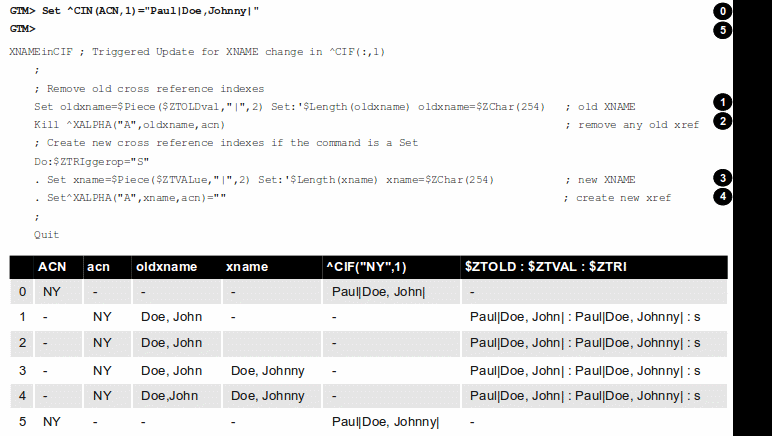

This section contains a simple example showing how a GT.M trigger can automatically maintain cross references in response to a SET or KILL operation on ^CIF(ACN,1). It also reinforces the basic trigger concepts explained above. Global nodes in ^CIF(ACN,1) have a structure ^CIF(ACN,1)=NAM|XNAME| where the vertical-bars are delimiters and XNAME is a customer's canonical name (e.g., "Doe, Johnny"). The application schema has one cross reference index, ^XALPHA("A",XNAME,ACN)="". A GT.M trigger specified for ^CIF(:,1) nodes can automatically maintain the cross references.
-
Using your editor, create a trigger definition file called
triggers.trgwith the following entry:+^CIF(acn=:,1) -delim="|" -pieces=2 -commands=SET,KILL -xecute="Do ^XNAMEinCIF"In this definition:
^CIF- specifies the global variable to which the trigger applies.acn=:- in ZWRITE syntax, ":" specifies any value for the first subscript.acn= prefixrequests GT.M assign the value of the first subscript (ACN) to the local variableacnbefore invoking the trigger logic.1- specifies that the trigger matches only if the second subscript is 1 (one).-delim="|" - specifies that GT.M use "|" as the piece separator when checking the value of the node to see whether to invoke the trigger. The use of the keyword delim tells GT.M to use $PIECE() semantics for the value at the node; zdelim, instead, would instruct GT.M to use $ZPIECE() semantics.-pieces=2- specifies that GT.M should only invoke the trigger when the update changes the second piece (XNAME) not for a change to the first piece (NAM), or any other piece without a change to XNAME.-commands=SET,KILL - specifies that GT.M invoke the trigger for SET and KILL updates (but not a ZKILL/ZWITHDRAW command).-xecute="Do ^XNAMEinCIF"- provides code for GT.M to invoke to perform the trigger logic.
-
Execute a command like the following:
$ mupip trigger -triggerfile=triggers.trg
This command adds a trigger for ^CIF(:,1). On successful trigger load, this command displays an output like the following:
File triggers.trg, Line 1: ^CIF trigger added with index 1 ========================================= 1 triggers added 0 triggers deleted 0 trigger file entries not changed 0 triggers modified =========================================
Now, every SET and KILL operation on the global node ^CIF(:,1) executes the routine
XNAMEinCIF.-
Using your editor, create an M routine called XNAMEinCIF.m with the following code:
XNAMEinCIF ; Triggered Update for XNAME change in ^CIF(:,1) Set oldxname=$Piece($ZTOLDval,"|",2) Set:'$Length(oldxname) oldxname=$zchar(254); old XNAME Kill ^XALPHA("A",oldxname,acn); remove any old xref ; Create a new cross reference if the command is a Set Do:$ZTRIggerop="S" . Set xname=$Piece($ZTVALue,"|",2) Set:'$Length(xname) xname=$zchar(254) ; new XNAME . Set^XALPHA("A",xname,acn)="" ; create new xref ;When the XNAME piece of a ^CIF(:,1) node is SET to a new value or KILLed, after obtaining the values, an unconditional KILL command deletes the previous cross reference index, if it exists. The deletion can be unconditional, because if the node did not previously exist, then the KILL is a no-op. Then, only if a SET invoked the trigger (determined from the ISV $ZTRIGGEROP), the trigger invoked routine creates a new cross reference index node. Note that because GT.M implicitly creates a new context for the trigger logic we do not have to worry about out choice of names or explicitly NEW any variables.
After obtaining the values, an unconditional KILL command deletes the previous cross reference index, if it exists. Then, only if a SET invoked the trigger (determined from the ISV $ZTRIGGEROP), the trigger invoked routine creates a new cross reference index node. Note that because GT.M implicitly creates a new context for the trigger logic we do not have to worry about out choice of names or explicitly NEW any variables.
The following illustration shows the flow of control when the trigger is executed for Set ^CIN(ACN,1)="Paul|John, Doe, Johnny|". The initial value of ^CIN(ACN,1) is "Paul|Doe, John|" and ACN is set to "NY".

![[Important]](images/important.jpg) |
Important |
|---|---|
Within trigger context (Step 1 through 4) , if you modify the value of $ZTVALUE, GT.M commits it to the database at Step 5. GT.M executes all steps (0 through 5) as an Atomic (all or nothing) transactional unit. |
The following illustration shows the flow of control when the trigger is executed for Kill ^CIN(ACN,1).